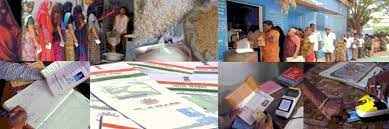

The public distribution system (PDS) evolved as a system of management of scarcity through distribution of foodgrains at affordable prices.PDS is operated under the joint responsibility of the Central and the State/UT Governments. The Central Government, through Food Corporation of India (FCI), has assumed the responsibility for procurement, storage, transportation and bulk allocation of food grains to the State Governments.Public Distribution System (PDS) has evolved as a system of management of scarcity through distribution of food grains at affordable prices. Over the years, PDS has become an important part of Government's Policy for management of food economy in the country.
The public distribution of essential commodities was in existence in the country during the inter-war period. However, PDS, with its focus on distribution of foodgrains in urban scarcity areas, had emanated from the critical food shortages of 1960s. PDS had substantially contributed to the containment of rise in food grains prices and ensured access of food to urban consumers. As the national agricultural production had grown in the aftermath of Green Revolution, the outreach of PDS was extended to tribal blocks and areas of high incidence of poverty in the 1970s and 1980s.Economist Abhijit Sen, a former Planning Commission member and one of the country's foremost experts on rural economy, died on Monday night. He was 72.In June 1997, the Government of India launched the Targeted Public Distribution System (TPDS) with a focus on the poor.
The Revamped Public Distribution System (RPDS) was launched in June, 1992 with a view to strengthen and streamline the PDS as well as to improve its reach in the far-flung, hilly, remote and inaccessible areas where a substantial section of the poor live. It covered 1775 blocks wherein area specific programmes such as the Drought Prone Area Programme(DPAP), Integrated Tribal Development Projects (ITDP), Desert Development Programme (DDP) were being implemented and in certain Designated Hill Areas (DHA) which were identified in consultation with State Governments for special focus. Food grains for distribution in RPDS areas were issued to the States at 50 paise below the Central Issue Price. The scale of issue was up to 20 kg per card. The RPDS included area approach for ensuring effective reach of the PDS commodities, their delivery by State Governments at the doorstep of FPSs in the identified areas, additional ration cards to the left out families, infrastructure requirements like additional Fair Price Shops, storage capacity etc. and additional commodities such as tea, salt, pulses, soap, etc. for distribution through PDS outlets.
In June, 1997, the Government of India launched the Targeted Public Distribution System (TPDS) with focus on the poor. Under the PDS, States were required to formulate and implement foolproof arrangements for identification of the poor for delivery of foodgrains and for its distribution in a transparent and accountable manner at the FPS level. The scheme, when introduced, was intended to benefit about 6 crore poor families for whom a quantity of about 72 lakh tonnes of food grains was earmarked annually. The identification of the poor under the scheme was done by the States as per State-wise poverty estimates of the Planning Commission for 1993-94 based on the methodology of the "Expert Group on estimation of proportion and number of poor” chaired by Late Prof Lakdawala. The allocation of food grains to the States/UTs was made on the basis of average consumption in the past i.e. average annual off-take of food grains under the PDS during the past ten years at the time of introduction of TPDS.
Leakages and corruption: There have been widespread reports of corruption and leakages in the PDS, with middlemen and corrupt officials diverting subsidised goods for sale in the open market or selling them at higher prices to beneficiaries. TPDS suffers from large leakages of food grains during transportation to and from ration shops into the open market The food grains supplied by the ration shops are not enough to meet the consumption needs of the poor. Quality of the food grains is very low. There is corruption involved in the process of identifying the poor families, and therefore, the benefit of PDS does not reach the needy poor sections of the society.

I have taken permission from sachivalayam for conducting survey in near by areas.I conducted survey in near by areas about food initiative corporation programs and I have told the importance of foodgrains provided by government for affodable prices to the people.I have gathered the information about the people who are not recieving the foodgrains from the government,so that people think about that how they are utilizing that ration which is provided by government to people for affordable prices.public distribution system is one of the powerful points of indian government. i have told them the importance of the public distribution system and also created awareness about public distribution system.
email: investors@pdsmultinational.com
It is concluded that the PDS or the public distribution system is one of the powerful points of the Indian government. This is related to the food security system of India and was established under the ministry of food, public distribution, and consumer affairs. The GPS technology system is followed by the PDS and it can allow the monitoring process through the SMS. On the other hand, FPS allocation related to computerised allocation is used in the PDS.so finally we conclude that public distribution system is mostly useful for under below poverty line .According to that we have taken permission from vro for conducting surveys near by our areas. After conducting the surveys we came to know that so many people are utilizing the foodgrains which are provided by the government for affordable prices.we have gathered the information about the people who are not recieving the foodgrains from the government ,so that we created awareness to the people about public distribution system.